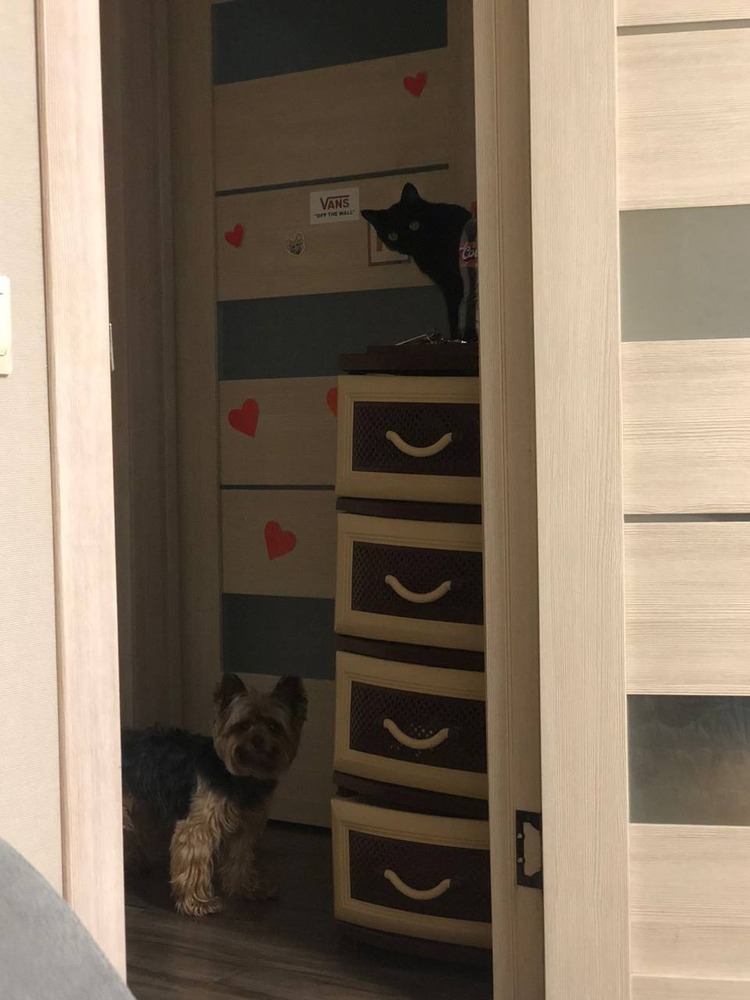

Все приветики-пистолетики! Меня зовут Полина Петровская. Мне 18 годиков.
Живу самом красивом и морском городе во Владивостоке!
Сейчас будет топ-10 интерестных фактов обо мне)
1. В детстве я была достаточно скромной девочкой. Мне было трудно начать общение со сверниками. Но тем не менее сейчас я достаточно открытый человек, которой всегда раб новым знакомствам
2. Я закончила 9 и 11 класс с отличием, хотя до 9 класса никогда ею не была. Правда мне не хватило пару баллов по ЕГЭ для красного аттестата, но синий тоже красивый.
3. Я живу в поселке Емар, это находиться в районе Шаморы. Там очень красивая природа и до моря идти минут 7.Поселок сам по себе не большой, но там есть все необходимое, для спокойной жизни.

4. Дома у меня живет красивая черная кошка Оливия, прекрсный йорк Бакс и ... не знаю какое прилагательное к ним подобрать, вобщем просто рыбки.
5. Еще в 8-9 классе я точно знала, кем хочу быть по жизни. Поэтому в 11 классе, когда нужно было выбирать предметы я не долго думаяя, выбрала математику и обществознание.
6. Я очень сильно люблю детей. И именно с этим связана моя будущая профессия
7. У меня есть работа. Про нее вы можете почитать более подробно на другой странице)
8. Честно, я даже не знаю какая у меня национальность. В моей крови на мешано всего да понемногу. Есть и русские корни, и чувашские, и еще какие-то.
9. У меня есть 2 таутировки и они обе связаны с моей семьей) Первая - это фраза написанная почерками мамы, бабушки и дедушки. Они даже не знали, для чего они поочереди писали на листочке фразу "Мы всегда рядом!". Вторая же татуировка парная вместе с моей мамой. У меня на руке маленький принц, а у мамы лис)
10. В общей сумме у меня 6 проколов на ушах. Пять на одном и один на другом. Всем они, кроме одного, были сделаны не правильно и пистолетом. Но я опять хочу себе еще один прокол)